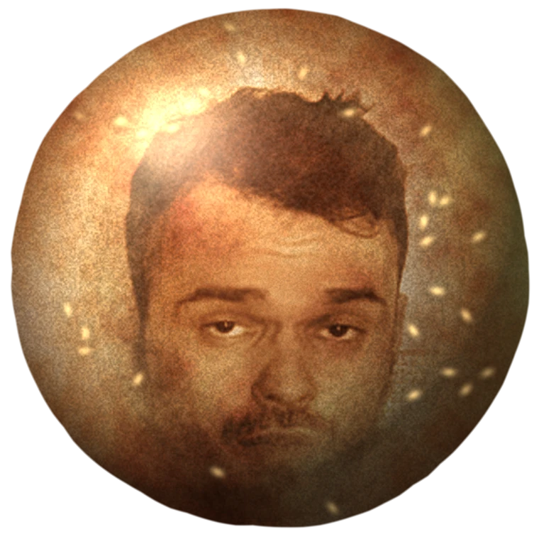

Возражения
Отвечаем заранее, чтобы не отвечать в три часа ночи.
А что за фильм?
«Колобок». Полтора часа, ночной сеанс в четыре двадцать, восьмой ряд у прохода. Пересказывать не буду, иначе вечером не о чем будет спорить.
А как же море?
Море существует примерно четыре миллиарда лет и планирует продолжать. Оно тебя подождёт. Сеанс не подождёт: он в конкретную ночь, и до него собирается конкретная компания.
А «всё включено»?
Включено: билет, мясо, лёд, крыша, стулья, зарядка для телефона и кто-нибудь, кто вызовет тебе такси. Не включено: браслет на руку и очередь к паэлье.
А загар?
Загар сходит за три недели. Фотография, где ты стоишь у мангала в трениках и объясняешь всем финал, живёт вечно.
А если билеты уже куплены?
Тогда у тебя есть уважительная причина, и мы её принимаем. Возвращаешься и сразу открываешь этот сайт заново. Тут ничего не поменяется, кроме даты сеанса.
А если я всё-таки полечу?
Мы не обидимся. Просто перескажем тебе финал в голосовом, часа в три ночи.
Ну что, катимся?
Нажми: текст со ссылкой скопируется, и сразу откроется чат. Останется вставить и отправить.
Принято доводов: 0 из восемнадцати
